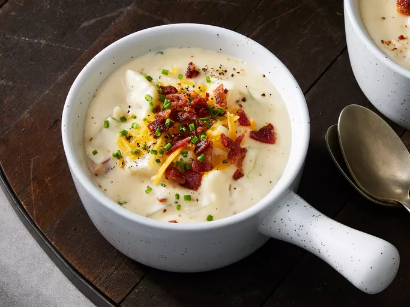

Baked Potato Soup
If you want to back to Homepage click herec

Description
Baked potato soup is the perfect hearty, filling, stick-to-your-bones dinner for a cold winter's night.
This baked potato soup recipe will quickly become a family favorite.
Ingredients
- Bacon: This baked potato soup starts with bacon cooked in a large skillet.
- Butter: You can also use margarine.
- Flour & milk: Whisk all-purpose flour and milk into the melted butter for a perfectly thick base.
- Baked potatoes
- Green onions: Chopped green onions lend bright, bold flavor and color.
- Seasonings: This baked potato soup is simply seasoned with salt and pepper.
- Cheese & sour cream: Shredded Cheddar cheese and sour cream ensure a rich and creamy soup.